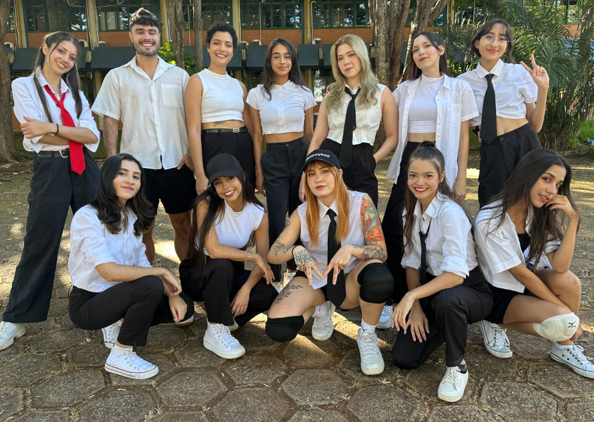

Conhecendo o grupo
História do MichiGO
Criado em 2013, o grupo cover MichiGO é o mais antigo da capital de Goiás e desde a sua criação várias pessoas incríveis entraram nessa família (uma vez MichiGO, sempre MichiGO).
O grupo começou com uma idéia da integrante Juliane de ingressar no mundo da dança através do K-Pop, nos primórdios de eventos na cidade, junto com algumas amigas e com ajuda da sua irmã.
Atualmente, o MichiGO é um dos grupos mais conhecidos no cenário de K-Pop em Goiânia e aos poucos vem conquistando espaço no meio cover do Brasil, por meio das competições e das redes sociais.
Os ensaios semanais são o nosso maior comprometimento, e com muita dedicação, o grupo já conseguiu se classificar duas vezes nos melhores concursos cover do país: o Kpop World Festival 2019 e o K-Expo Weekend 2022.